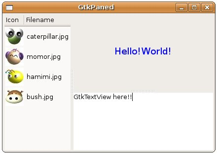

GtkWidget *gtk_hpaned_new(void);
GtkWidget *gtk_vpaned_new(void);
GtkWidget *gtk_vpaned_new(void);
一個GtkPaned有左右或上下兩個區域可以加入子元件，您可以使用gtk_paned_pack1()將元件加入左邊或上面，使用gtk_paned_pack2()將元件加入右邊或下面：
void gtk_paned_pack1(GtkPaned *paned,
GtkWidget *child,
gboolean resize,
gboolean shrink);
void gtk_paned_pack2(GtkPaned *paned,
GtkWidget *child,
gboolean resize,
gboolean shrink);
GtkWidget *child,
gboolean resize,
gboolean shrink);
void gtk_paned_pack2(GtkPaned *paned,
GtkWidget *child,
gboolean resize,
gboolean shrink);
一個最簡單的範例如下所示：
- gtk_paned_demo.c
#include <gtk/gtk.h>
int main(int argc, char *argv[]) {
GtkWidget *window;
GtkWidget *hPaned;
gtk_init(&argc, &argv);
window = gtk_window_new(GTK_WINDOW_TOPLEVEL);
gtk_window_set_title(GTK_WINDOW(window), "GtkPaned");
gtk_window_set_default_size(GTK_WINDOW(window), 300, 200);
hPaned = gtk_hpaned_new();
gtk_paned_pack1(GTK_PANED(hPaned),
gtk_frame_new("GtkPaned Add1 Here"), FALSE, FALSE);
gtk_paned_pack2(GTK_PANED(hPaned),
gtk_text_view_new(), TRUE, FALSE);
gtk_container_add(GTK_CONTAINER(window), hPaned);
g_signal_connect(GTK_OBJECT(window), "destroy",
G_CALLBACK(gtk_main_quit), NULL);
gtk_widget_show_all(window);
gtk_main();
return 0;
}
直接來看執行畫面：

gtk_paned_pack1()與gtk_paned_pack2()可以使用有預設參數的gtk_paned_add1()及gtk_paned_add2()來簡化。若要作較複雜的版面切割，則可以搭配垂直與水平的切割組合，例如：
- gtk_hv_paned_demo.c
#include <gtk/gtk.h>
enum {
PIXBUF_COL,
TEXT_COL
};
GtkTreeModel* createModel() {
const gchar *files[] = {"caterpillar.jpg", "momor.jpg",
"hamimi.jpg", "bush.jpg"};
GdkPixbuf *pixbuf;
GtkTreeIter iter;
GtkListStore *store;
gint i;
store = gtk_list_store_new(2, GDK_TYPE_PIXBUF, G_TYPE_STRING);
for(i = 0; i < 4; i++) {
pixbuf = gdk_pixbuf_new_from_file(files[i], NULL);
gtk_list_store_append(store, &iter);
gtk_list_store_set(store, &iter,
PIXBUF_COL, pixbuf,
TEXT_COL, files[i],
-1);
gdk_pixbuf_unref(pixbuf);
}
return GTK_TREE_MODEL(store);
}
GtkWidget* createTreeView() {
GtkWidget *treeView;
GtkTreeViewColumn *column;
GtkCellRenderer *renderer;
treeView = gtk_tree_view_new_with_model(createModel());
renderer = gtk_cell_renderer_pixbuf_new();
column = gtk_tree_view_column_new_with_attributes(
"Icon", renderer,
"pixbuf", PIXBUF_COL,
NULL);
gtk_tree_view_append_column(GTK_TREE_VIEW (treeView), column);
renderer = gtk_cell_renderer_text_new();
column = gtk_tree_view_column_new_with_attributes(
"Filename", renderer,
"text", TEXT_COL,
NULL);
gtk_tree_view_append_column(GTK_TREE_VIEW (treeView), column);
return treeView;
}
int main(int argc, char *argv[]) {
GtkWidget *window;
GtkWidget *hPaned, *vPaned;
GtkWidget *treeView;
GtkWidget *label;
gtk_init(&argc, &argv);
window = gtk_window_new(GTK_WINDOW_TOPLEVEL);
gtk_window_set_title(GTK_WINDOW(window), "GtkPaned");
gtk_window_set_default_size(GTK_WINDOW(window), 320, 200);
hPaned = gtk_hpaned_new();
vPaned = gtk_vpaned_new();
treeView = createTreeView();
gtk_paned_add1(GTK_PANED(hPaned), treeView);
gtk_paned_add2(GTK_PANED(hPaned), vPaned);
label = gtk_label_new(NULL);
gtk_label_set_markup(GTK_LABEL(label),
"<span foreground='blue' size='x-large'>Hello!World!</span>");
gtk_paned_add1(GTK_PANED(vPaned), label);
gtk_paned_add2(GTK_PANED(vPaned), gtk_text_view_new());
gtk_container_add(GTK_CONTAINER(window), hPaned);
g_signal_connect(GTK_OBJECT(window), "destroy",
G_CALLBACK(gtk_main_quit), NULL);
gtk_widget_show_all(window);
gtk_main();
return 0;
}
程式主要專注在元件的加入位置即可，所完成的畫面如下所示：
